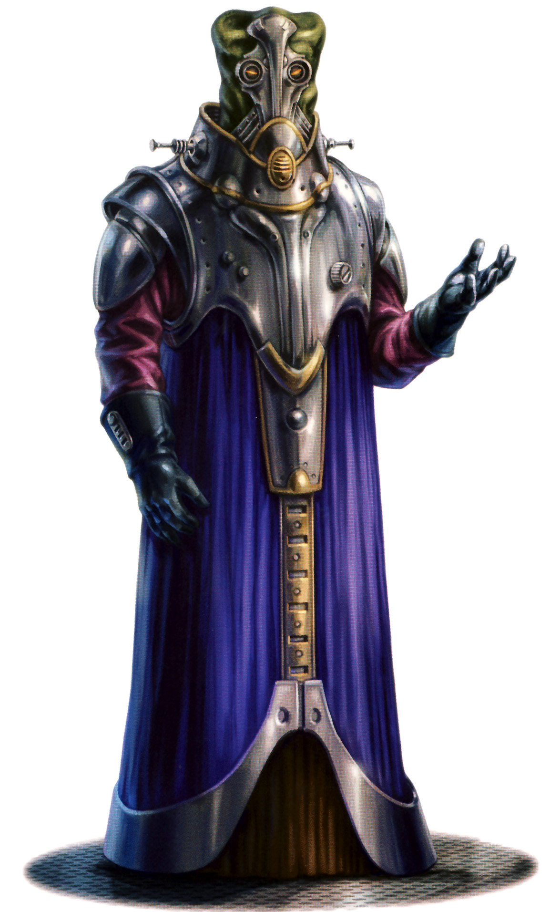

<!DOCTYPE html>
<html>

<head>
  <title>Skakoan</title>

  <meta charset="utf-8">
  <meta name="viewport" content="width=device-width, initial-scale=1, shrink-to-fit=no">

  <link rel="stylesheet" href="https://stackpath.bootstrapcdn.com/bootstrap/4.1.3/css/bootstrap.min.css" integrity="sha384-MCw98/SFnGE8fJT3GXwEOngsV7Zt27NXFoaoApmYm81iuXoPkFOJwJ8ERdknLPMO"
    crossorigin="anonymous">
  <link rel="stylesheet" href="https://pro.fontawesome.com/releases/v5.5.0/css/all.css" integrity="sha384-j8y0ITrvFafF4EkV1mPW0BKm6dp3c+J9Fky22Man50Ofxo2wNe5pT1oZejDH9/Dt"
    crossorigin="anonymous">
  <link rel="stylesheet" type="text/css" href="style.css">
</head>

<body>

  <nav class="navbar navbar-expand-lg navbar-dark bg-dark">
    <a class="navbar-brand" href="#">Star Wars Tabletop Codex</a>
    <button class="navbar-toggler" type="button" data-toggle="collapse" data-target="#navbarSupportedContent" aria-controls="navbarSupportedContent"
      aria-expanded="false" aria-label="Toggle navigation">
      <span class="navbar-toggler-icon"></span>
    </button>

    <div class="collapse navbar-collapse" id="navbarSupportedContent">
      <ul class="navbar-nav mr-auto">
        <li class="nav-item">
          <a class="nav-link" href="index.html">Home</a>
        </li>
        <li class="nav-item active" id="nav_active">
          <a class="nav-link" href="species_index.html">Species <span class="sr-only">(current)</span></a>
        </li>
        <li class="nav-item">
          <a class="nav-link" href="equipment_index.html">Equipment</a>
        </li>
        <li class="nav-item">
          <a class="nav-link" href="class_index.html">Classes</a>
        </li>
      </ul>
    </div>
  </nav>


  <br>
  <div class="Container" id="main_box">

    <a href="species_index.html"><button type="button" class="btn btn-outline-dark" id="back_button">&#9668; Back</button></a>

    <h1>Skakoan</h1>
    <h5 class="aurebesh_under">skakoan</h5>

    
    <br>

    <div class="container col-8">

      <div class="card">
        <div class="card-header" id="headingOne">
          <h5 class="mb-0">
            <button class="btn btn-link btn-block" type="button" data-toggle="collapse" data-target="#collapseZero" aria-expanded="false"
              aria-controls="collapseZero" style="color: white; text-decoration: none; text-align: left">
              Stats
            </button>
          </h5>
        </div>
        <div id="collapseZero" class="collapse" aria-labelledby="headingZero">
          <div class="card-body">
            <div class="row justify-content-md-center">
              <div class="col col-lg-2 align" align="center">
                <strong>Bra</strong>
              </div>
              <div class="col col-lg-2" align="center">
                <strong>Agi</strong>
              </div>
              <div class="col col-lg-2" align="center">
                <strong>Int</strong>
              </div>
              <div class="col col-lg-2" align="center">
                <strong>Cun</strong>
              </div>
              <div class="col col-lg-2" align="center">
                <strong>Will</strong>
              </div>
              <div class="col col-lg-2" align="center">
                <strong>Pre</strong>
              </div>
            </div>
            <div class="row justify-content-md-center">
              <div class="col col-lg-2" align="center">
                2
              </div>
              <div class="col col-lg-2" align="center">
                2
              </div>
              <div class="col col-lg-2" align="center">
                3
              </div>
              <div class="col col-lg-2" align="center">
                1
              </div>
              <div class="col col-lg-2" align="center">
                2
              </div>
              <div class="col col-lg-2" align="center">
                2
              </div>
            </div>
            <br>
            <div class="row justify-content-md-center">
              <div class="col col-lg-6">
                <b>Wound Threshold: </b>10 + Brawn
              </div>
            </div>
            <div class="row justify-content-md-center">
              <div class="col col-lg-6">
                <b>Strain Threshold: </b>8 + Willpower
              </div>
            </div>
            <div class="row justify-content-md-center">
              <div class="col col-lg-6">
                <b>Starting Experience: </b>80 XP
              </div>
            </div>
            <div class="row justify-content-md-center">
              <div class="col col-lg-6">
                <p><b>Special Abilities: </b>Skakoans begin the game with one rank in <u>Knowledge (Education)</u> and one
                  rank in <u>Mechanics</u>. They still may not train either above rank 2 during character creation.</p>
              </div>
            </div>
            <div class="row justify-content-md-center">
              <div class="col col-lg-6">
                <p><b>Methane Breather: </b>Skakoans require methane to live, and wear special pressure suits to emulate
                  the conditions on Skako. They start the game with a specialised pressure suit with methane respirator,
                  which counts as armor with indefinite supplies of methane. The suit has +2 soak, encumbrance of 5, 5 hard
                  points, cannot acquired unless on Skako (at a price equivalent to laminate armor), and cannot be worn by
                  other species. Skakoans treat standard planetary air pressure and composition as a corrosive atmosphere
                  with rating 6</p>
              </div>
            </div>
          </div>
        </div>
      </div>

    </div>
    <br>
    <p>Although it is a Core World, Skako remained disconnected from the Republic for millennia for several reasons. Skako’s
      high-pressure methane atmosphere has proven uncomfortable at best, and deadly at worst, to the majority of the galaxy’s
      life forms. Likewise, physical participation in galactic culture requires <b>Skakoans</b> to wear hardened encounter
      suits. These challenges reinforced the Skakoans’ cultural tendencies toward xenophobia and isolationism.</p>
    <p>While the galaxy spun around them, the Skakoans developed a sophisticated civilization, harnessing the power of their
      atmosphere, improving their technology, and covering their planet with industry. Although members of the species possess
      a wide variety of interests and professions, the Skakoans most willing to venture from their homeworld—even if only
      to nearby Skako Minor—have tended to be technological industrialists. This has established Skakoans in the galactic
      eye as a technologically obsessed species.</p>
    <p>The stereotype has a measure of truth to it. The massive planetwide city on Skako requires constant maintenance and
      improvement, and these industrialists have seen an opportunity to trade for technologies and sciences to bring back
      to Skako. Overcoming their reluctance to deal with outsiders, they have invested in companies, negotiated limited trade
      with their homeworld, and maneuvered themselves into executive positions at various organizations, most notably in
      the Techno Union.</p>
    <p>However, industrialist Skakoans originally avoided membership in the Republic, preferring not to deal with Senate
      representation or political shenanigans. Homebound Skakoans didn’t care who or what empire or government controlled
      the surrounding systems as long as Skako was left alone, and the industrialists felt that technology and industry knew
      no political borders. This changed when Wat Tambor rose up the ranks of the Techno Union, eventually serving as its
      foreman and representative in the Galactic Senate, thus becoming the de facto representative of Skako.</p>
    <p>The onset of the Clone Wars changed Skako’s political attitudes rapidly. Unaware of the Sith manipulations, Wat Tambor
      and other Skakoan business interests sided with the Separatists, fearing Republic overreach. Although the Techno Union
      had officially declared neutrality, Wat Tambor directly and Skako indirectly provided support to the Separatists. Tambor’s
      expansionist leanings turned the Republic against Skako, and upon his assassination and the dissolution of the Separatists,
      the Empire inherited the prejudice.</p>
    <p>Currently, the Empire has Skako under emigration restriction, and the majority of Skakoans prefer being cut off from
      the galaxy. A few think their people have learned the wrong lessons from the failures of Wat Tambor. Instead of withdrawing
      from galactic participation, they want Skakoans, not the Empire, to decide the fate of their homeworld and citizens.</p>
    <br>
    <div class="accordion" id="accordionExample">

      <div class="card">
        <div class="card-header" id="headingOne">
          <h5 class="mb-0">
            <button class="btn btn-link btn-block" type="button" data-toggle="collapse" data-target="#collapseOne" aria-expanded="false"
              aria-controls="collapseOne" style="color: white; text-decoration: none; text-align: left">
              Physiology
            </button>
          </h5>
        </div>
        <div id="collapseOne" class="collapse" aria-labelledby="headingOne">
          <div class="card-body">
            <p>Thin in build, Skakoans have pale skin in folds, little facial or body hair, nasal slits, and toothless mouths.
              While they ingest liquid food, Skakoans can sustain their metabolism with atmospheric methane if it remains
              the proper pressure. For this reason, Skakoans can’t simply use a rebreather like the Gand; they require a
              fully pressurized suit. Other than the pressurized methane requirement, Skakoans resemble humans in physiological
              matters. They have roughly the same lifespan and the same biological issues in health, reproduction, and old
              age.
            </p>
          </div>
        </div>
      </div>

      <div class="card">
        <div class="card-header" id="headingTwo">
          <h5 class="mb-0">
            <button class="btn btn-link btn-block" type="button" data-toggle="collapse" data-target="#collapseTwo" aria-expanded="false"
              aria-controls="collapseTwo" style="color: white; text-decoration: none; text-align: left">
              Society
            </button>
          </h5>
        </div>
        <div id="collapseTwo" class="collapse" aria-labelledby="headingTwo">
          <div class="card-body">
            <p>Logic and mathematics dominate the discourse on Skako, but its people remain highly emotional and passionate.
              Outsiders mistake them to be a robotic species due to their pressure suits and translator units. Skakoans see
              no contradictions between emotion and logic, though even they admit that their fear of the galaxy is partially
              irrational.
            </p>
            <p>Skako’s environment doesn’t welcome outsiders. Even other methane breathers find the pressure uncomfortable.
              Skakoans find existence offworld equally uncomfortable, and the need for hardened pressure suits naturally
              causes them to see the galaxy as a dangerous and hostile place. This xenophobia extends to visitors to the
              planet, who must wear their own pressure suits.</p>
            <p>Despite this difficulty, or perhaps because of it, Skakoans formed galactic companies such as Baktoid Armor
              Workshop, placing their headquarters on Skako, forcing outsiders to adjust to Skako’s environment while living
              on the planet. This practice eventually led the Techno Union to do the same.</p>
            <p>The logistical difficulties of living on Skako have given Skakoans an interesting perspective on technology.
              While some species think technology invasive or in opposition to the natural world, Skakoans see technology
              as necessary, essential, and an evolution of nature. Methane being a plentiful and powerful fuel source, metallic
              resources abundant, and oxygen a controllable and useful waste product (although a flammable toxin), machines
              and industry are a natural and inevitable end result of their intelligence.</p>
            <p>Skakoans practice a mystery religion that is led by the Elders of the Power Mounds. Rising in the ranks of
              the religion allows them access to the holy site and contact with mystic artifacts. The religion bases itself
              on belief in the existence of an alternate dimension and the mythical creature living within it. Whether or
              not this creature exists or if the Elders can travel to this dimension is known only to the Elders and a select
              few.
            </p>
          </div>
        </div>
      </div>

      <div class="card">
        <div class="card-header" id="headingThree">
          <h5 class="mb-0">
            <button class="btn btn-link btn-block" type="button" data-toggle="collapse" data-target="#collapseThree" aria-expanded="false"
              aria-controls="collapseThree" style="color: white; text-decoration: none; text-align: left">
              Homeworld
            </button>
          </h5>
        </div>
        <div id="collapseThree" class="collapse" aria-labelledby="headingThree">
          <div class="card-body">
            <p>Much like Coruscant, <b>Skako</b> hosts a planetwide city, or ecumenopolis, demonstrating its advanced technological
              civilization. With rich resources, especially of methane and metals, the Skakoans have had plenty with which
              to build and experiment. Due to solar radiation striking the dense atmosphere, though, the upper layers of
              the atmosphere are an alkaline haze. This limited astronomical science until the development of low orbital
              flight.
            </p>
            <p>With a lack of cultural desire to explore the stars, the Skakoans focused on managing their planet, covering
              their homeworld with an ecumenopolis much earlier than other civilizations. Their interstellar neighbors ignored
              the planet, thinking it uninhabitable and dangerous to explore. Any power signatures they detected, they attributed
              to methane flares. Only when the Skakoans ventured beyond their hazy atmospheric borders did the galaxy take
              notice. Still, because of Skakoan xenophobia and personal secrecy about their lives and homeworld, few outsid￾ers
              know much about Skako or its people.</p>
          </div>
        </div>
      </div>
      <div class="card">
        <div class="card-header" id="headingFour">
          <h5 class="mb-0">
            <button class="btn btn-link btn-block" type="button" data-toggle="collapse" data-target="#collapseFour" aria-expanded="false"
              aria-controls="collapseFour" style="color: white; text-decoration: none; text-align: left">
              Language
            </button>
          </h5>
        </div>
        <div id="collapseFour" class="collapse" aria-labelledby="headingFour">
          <div class="card-body">
            <p>The Skakoans speak their native Skakoverbal, a complex language that shares similarities with Binary. Most
              Skakoans don’t learn Basic, since few venture offworld. Those who do travel abroad tend to rely on language
              translation modules attached to their heavy pressure suits, adding to the myth that the Skakoans are cybernetic
              or machine beings. Again, due to the complexity of Skakoverbal, translation modules often spit out junk sounds
              when compressing down to simpler languages. Technology has been such a prominent part of their lives that the
              current symbol set of their written language, Skako-form, resembles circuitry.</p>
          </div>
        </div>
      </div>
      <div class="card">
        <div class="card-header" id="headingFive">
          <h5 class="mb-0">
            <button class="btn btn-link btn-block" type="button" data-toggle="collapse" data-target="#collapseFive" aria-expanded="false"
              aria-controls="collapseFive" style="color: white; text-decoration: none; text-align: left">
              Life in the Alliance
            </button>
          </h5>
        </div>
        <div id="collapseFive" class="collapse" aria-labelledby="headingFive">
          <div class="card-body">
            <p>The Skakoans have suffered greatly at the hands of the Empire. Once the Confederacy of Independent Systems
              fell, the Republic quickly turned toward sanctioning Skako. When the Republic became the Empire, the Skakoans
              found themselves shunned as enemies of the Emperor. Most are content, or at least willing, to remain on their
              planet with the Empire watching from the skies above.</p>
            <p>The ones who have joined the Rebel Alliance know that hiding from the galaxy won’t save them or their homeworld.
              Still, living among low-pressure oxygen breathers is isolating, and the heavy pressure suits increase their
              distance from their peers. These difficulties serve to heighten Rebel Skakoans’ militancy. They are willing
              to sacrifice breath, touch, and their xenophobia to work with outsiders, and every moment the Empire remains
              standing is a moment away from home.</p>
          </div>
        </div>
      </div>
      <div class="card">
        <div class="card-header" id="headingSix">
          <h5 class="mb-0">
            <button class="btn btn-link btn-block" type="button" data-toggle="collapse" data-target="#collapseSix" aria-expanded="false"
              aria-controls="collapseSix" style="color: white; text-decoration: none; text-align: left">
              Techno Union
            </button>
          </h5>
        </div>
        <div id="collapseSix" class="collapse" aria-labelledby="headingSix">
          <div class="card-body">
            <p>The Techno Union was a conglomerate of technology companies bonded together as a merchant guild. It had representation
              in the Galactic Senate and pushed for free trade, expansion onto planets to develop heavy industry, and self-regulation
              to prevent competition and government interference.
            </p>
            <p>Contrary to then-current belief, the Skakoans did not found the Techno Union, but by the time of the Clone
              Wars, they had majority control over the guild. Aggressive investment and shrewd maneuvering not only placed
              Skakoans in high positions in the Techno Union, but also moved the headquarters to Skako Minor. By the time
              the Clone Wars arrived, the galaxy considered the Techno Union and the Skakoans one and the same. Conversely,
              upon Imperial dissolution of the Techno Union, Skako lost its major means of galactic influence.</p>
          </div>
        </div>
      </div>
    </div>

  </div>

  <script src="https://code.jquery.com/jquery-3.3.1.slim.min.js" integrity="sha384-q8i/X+965DzO0rT7abK41JStQIAqVgRVzpbzo5smXKp4YfRvH+8abtTE1Pi6jizo"
    crossorigin="anonymous"></script>
  <script src="https://cdnjs.cloudflare.com/ajax/libs/popper.js/1.14.3/umd/popper.min.js" integrity="sha384-ZMP7rVo3mIykV+2+9J3UJ46jBk0WLaUAdn689aCwoqbBJiSnjAK/l8WvCWPIPm49"
    crossorigin="anonymous"></script>
  <script src="https://stackpath.bootstrapcdn.com/bootstrap/4.1.3/js/bootstrap.min.js" integrity="sha384-ChfqqxuZUCnJSK3+MXmPNIyE6ZbWh2IMqE241rYiqJxyMiZ6OW/JmZQ5stwEULTy"
    crossorigin="anonymous"></script>

  <div class="footer_bar"></div>
</body>

</html>